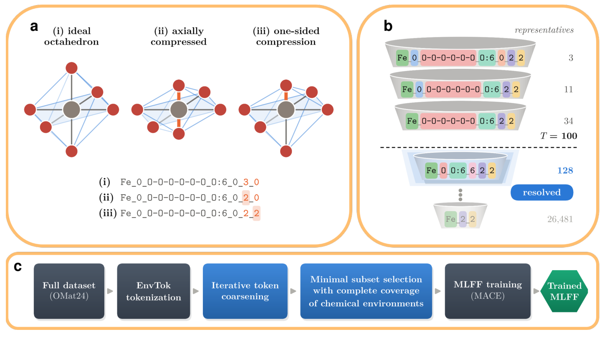
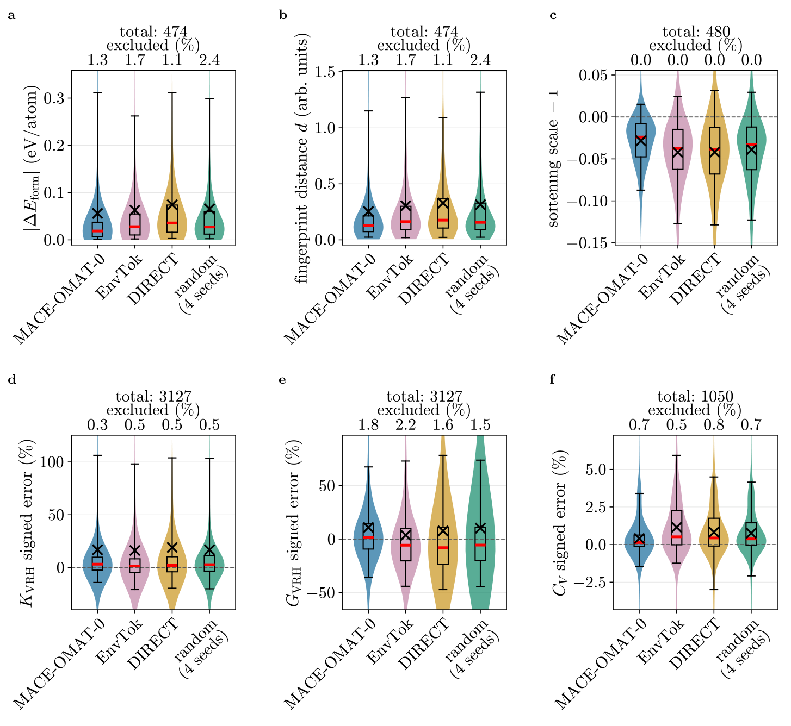
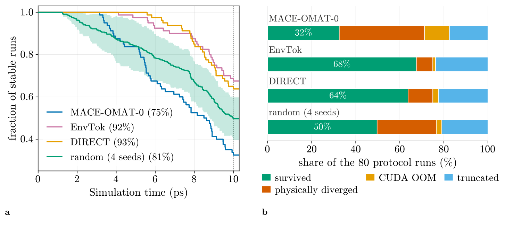
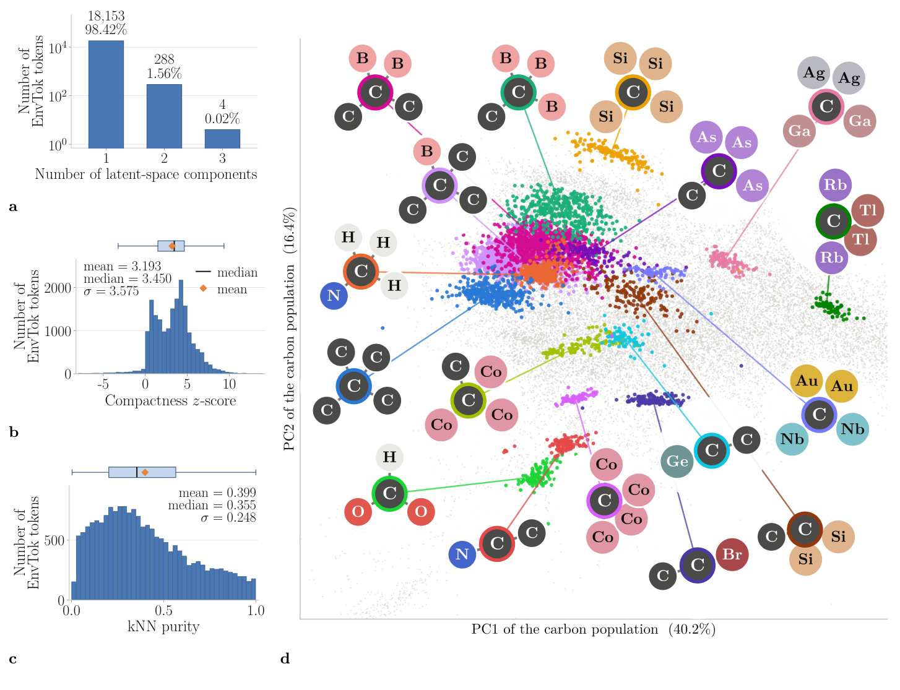
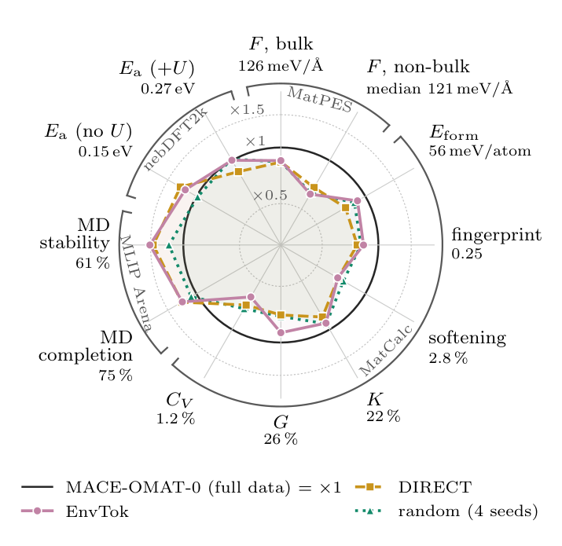

EnvTok：用局部化学环境挑选训练结构，OMat24不到1%的数据保留了多少能力
论文原文 ↗原文：Evgeny Moerman、Igor Poltavsky、Anton Charkin-Gorbulin、Alexandre Tkatchenko，Atoms that Matter: Largest Materials Datasets Are 99% Redundant, and Local Chemistry Can Guide the Required 1%，arXiv:2610.14392，2026。〔官方页面｜〕
通用机器学习力场正越来越多地依靠上亿个结构训练。这样的规模能覆盖广泛材料，却也带来两个成本：大量参考量子化学计算，以及随后长时间的模型训练。若希望把整个数据集从常用半局域 DFT 升级到杂化泛函，重新标注的代价尤其突出。
作者从数据产生方式提出问题：一个平衡晶体经过多次扰动、升温和采样，虽然变成很多条结构记录，内部的局部原子环境却可能大量重复。模型真正需要学习的不同化学环境，有多少已经被一个很小的子集覆盖？
这篇工作的两条线索相互配合：一是用不同策略挑选不到1%的数据，直接检验小数据模型保留了多少预测和模拟能力；二是提出 EnvTok，用可解释的局部环境描述，在计算参考能量和训练模型之前选择结构。
一、EnvTok怎样把结构变成可选择的化学环境
每个原子得到一张“局部环境标签”
给定一个周期晶体，输入是原子种类、坐标和晶胞。EnvTok 先借助 ChemEnv 的 Voronoi 几何分析识别每个原子的邻居。Voronoi 分析按空间分区判断邻接关系，再结合相对距离和邻居所占立体角，确定谁属于局部配位环境。
随后，每个原子被写成一个由七个字段组成的离散标签，即 token：中心元素、磁矩、邻居元素及重复数、最匹配的理想配位多面体、配位畸变程度、最压缩键的程度、压缩的不对称性。磁矩是可选的补充信息；没有磁性标签时可置零或省略。
以理想岩盐 NaCl 的一个 Na 为例：它周围有六个 Cl，构成正八面体。标签就记录“Na、六个 Cl 邻居、八面体、接近理想形状、键长处于参考范围、压缩基本对称”。若轴向被压缩，最短接触对应的字段会变化；若一侧被压缩，压缩不对称性也会变化。这样，模型训练中容易遇到不同受力响应的环境，就可以在几何层面被区分出来。
这里的“键压缩”用原子间距除以两元素共价半径之和来衡量，使不同元素的接触长度可在相对尺度上比较。配位畸变则衡量真实邻居排列偏离理想多面体的程度。将这些连续量划入若干区间，就能让相近环境共用标签，形成可统计的类别。

图1｜a 展示压缩如何改变局部标签；b 将样本过少的细标签逐级合并；c 从完整数据集经过环境覆盖选择，得到用于训练的子集。
从大量细标签，得到值得覆盖的环境类别
如果把每一点畸变都当作独立环境，类别会过于零碎。作者发现，OMat24 中约一半不同标签只出现在一个原子位点上，因此设计了由细到粗的分类阶梯。
具体做法是：先尝试完整标签；如果拥有该标签的不同结构不足阈值 T，就逐级去掉部分细节，例如畸变分档、磁矩或精细邻居组成，直到同类环境出现在足够多的结构中。本文取 T=100。原来的原子仍被归入某一级类别，环境覆盖目标由这些类别组成。
接着解决一个加权集合覆盖问题。一个晶体结构包含多种环境，因此选择它，相当于一次取得多个类别；算法要用尽量少的原子总数覆盖所有目标类别。作者采用贪心选择，再删除已经被后来结构替代的冗余结构，并补充少量结构，保留罕见的元素—配位数—压缩等组合。
至此，连续流程是：晶体坐标 → 每个原子的局部标签 → 合并稀有细类 → 覆盖这些环境的结构子集 → 使用子集的能量、力和应力训练力场。 EnvTok 的选样阶段依靠结构和可选磁矩，参考能量与力进入的是后面的训练阶段。
二、怎样检验“少数据仍能学会大部分内容”
作者在 OMat24 中去除含 f 区元素的结构，得到约6500万结构、12亿原子的候选池。随后按相同的 约650万原子预算 建立三类子集：EnvTok、DIRECT 和随机抽样。DIRECT 是先用已有 M3GNet 把整结构编码到特征空间，再聚类并从各类取样；随机抽样做四个种子，观察抽样波动。
固定的是原子预算，各方法选出的结构数因此不同：EnvTok 约79.6万个结构，DIRECT 约45.9万个，随机约35.6万个。EnvTok 倾向选择能以较少原子提供不同环境的小晶胞。
各子集分别训练 MACE 模型，再与全数据训练的 MACE-OMAT-0 比较。评价沿着实际用途展开：先比较原子力，再看形成能和弹性、热学性质，随后检验高温高压动力学与锂离子迁移势垒。
1. 不到1%的数据保留了多数静态和近平衡性质
在独立 MatPES 测试中，全数据模型的体相力平均绝对误差为126 meV/Å，子集模型约149—151 meV/Å；形成能误差由全数据的56 meV/atom变为子集模型的63—74 meV/atom。数据规模缩小超过百倍，这些主要误差仍处于接近的范围。

图2｜六组分布依次比较形成能、弛豫结构差异、力软化、体积模量、剪切模量与热容；子集模型保留了大部分近平衡预测能力。
近平衡测试中，EnvTok 与随机抽样结果总体接近，DIRECT 的部分形成能和弹性误差略大。三种相当不同的选择方式，都能以很小的数据比例学到多数常见性质，支持了作者的核心认识：这个大数据集反复包含大量常见局部环境，许多新增记录提供的是重复实例。
2. 极端条件动力学中，选到什么环境比数据量更关键
作者进一步使用80个材料混合结构，在10 ps的 NPT 动力学中，同时把温度从300 K升至3000 K、压力从0升至500 GPa。这要求模型在强压缩和剧烈运动时仍给出可持续积分的能量与力。

图3｜左图比较轨迹随时间的存活比例，右图区分完成、物理发散、显存耗尽与超时截断；图例括号为平均完成的轨迹步数比例。
全数据模型平均完成75%的轨迹步数，约三分之一运行走到终点。随机子集模型平均完成81%，EnvTok 和 DIRECT 分别达到 92%与93%。EnvTok 的约68%运行完整走完，DIRECT 约64%，随机约50%；物理发散比例则分别为8%、11%、27%，全数据模型为39%。
这组结果与环境选择方式对应：DIRECT 倾向覆盖特征空间极端结构，EnvTok 通过压缩与不对称字段主动保留相应环境。两种有针对性的选样都比随机抽样更稳定，也说明增加大量重复结构并不会自动改善这种高温高压测试表现。
锂离子迁移提供了另一项实际检验。对621个不含 Hubbard-U 元素、参考处理更一致的迁移过程，EnvTok 和 DIRECT 的势垒平均绝对误差分别为0.124和0.116 eV，全数据模型为0.146 eV。这里的小数据收益主要体现在较大误差的改善；针对罕见环境的选择比单纯随机取一小部分更有帮助。
3. 化学环境标签与模型自己学到的结构表示相对应
EnvTok 的类别来自预先规定的配位化学规则。作者再把它们放到全数据 MACE 模型的内部特征空间中，观察相同标签的原子是否聚集。这个内部特征空间就是网络为预测能量和力形成的数值表示。

图4｜a—c 衡量同类标签的连通性、紧凑程度和邻居标签一致性；d 展示不同碳中心环境在模型特征空间中的位置。
在至少由30个原子代表的18445类环境中，98.42%形成单一连通区域，96.9%比同元素随机原子集合更紧凑。几何与化学规则所区分的环境，因而也对应了模型学到的不同表示区域，为在训练前依据这些标签选样提供了支持。
三、领域贡献：把广泛采样与昂贵标注分开

图5｜黑圈表示全数据模型，各轴把误差或模拟成功率换成相对表现；圈外表示相应子集模型在该指标上更好。
这篇工作的核心发现是，OMat24 的有效信息量与不同化学环境的覆盖关系密切，而许多结构记录重复了已有环境。用不到1%的原子预算，三种选样方式都能保留大部分受测能力；EnvTok 进一步给出一个不依赖预训练力场和能量标签的环境覆盖准则。
由此形成的研究路线很具体：配置空间可以广泛探索，昂贵参考计算则优先留给带来新结构与新化学环境的构型。把待标注集合压缩到较小规模，也让作者所设想的杂化 DFT 或更高层级重新标注、多精度学习有了更可行的成本基础。
原始摘要完整中文翻译
面向材料的通用机器学习力场（MLFF）目前已在约一亿个结构上训练，其前提是可迁移性需要这样的规模。我们以现有最大的材料数据集 OMat24 检验这一前提：在包含650万个原子、占 OMat24 不到1%的子集上训练 MACE 模型。子集采用三种互补方式选择：随机抽样、基于预训练 MLFF 潜空间聚类的 DIRECT，以及一种新的、无需模型的方法 EnvTok，后者最大化离散且可解释的局部环境多样性。所有三个模型的力预测都与全数据参考模型 MACE-OMAT-0 接近，差距仅为数十 meV/Å；在形成能、弹性模量、热容、Li⁺迁移势垒以及最高3000 K和500 GPa条件下的分子动力学稳定性方面，也接近或超过全数据模型。性能对选择策略近乎不敏感，表明决定 OMat24 信息含量的是化学环境多样性，而非数据规模：其余99%的结构很大程度上是冗余的。因此，仍需广泛采样化学空间，但参考标签只需赋予结构与化学上不同的构型。EnvTok 利用原子位置与种类，并可选择加入磁矩，在任何标注或训练之前识别这些构型，从而得到紧凑且不依赖模型架构的数据集。这种百倍数据缩减使通用训练集的杂化 DFT 或更高层级重新标注成为可行方向，并释放计算预算，用于扩展环境覆盖和多精度学习。